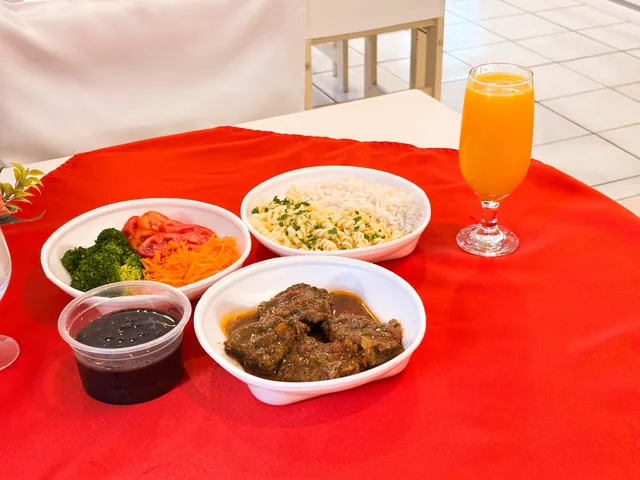
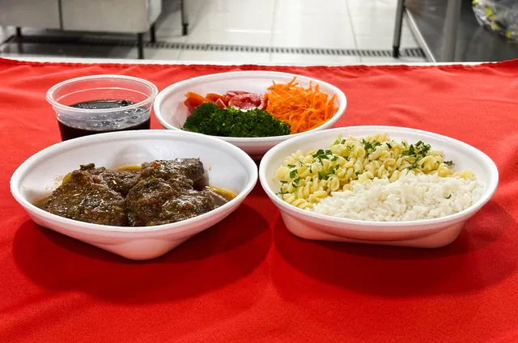

Marmita quente, feita no dia
Tempero artesanal e porção bem servida, para comer no trabalho ou em casa.
Pedir marmita
Três tamanhos
Marmitas térmicas e seladas, com 5 opções de proteína por dia: grelhados, massas e comida caseira. Pergunte o cardápio do dia no WhatsApp.
- P
- M
- G
Massas no cardápio
O cardápio é rotativo: vai do grelhado leve aos pratos mais tradicionais da cozinha brasileira, passando pelas massas.
Congelados
O Romi também prepara congelados para deixar em casa.
Perguntar dos congeladosComo pedir
- Peça o cardápio de hoje no WhatsApp ou pelo telefone.
- Escolha o tamanho P, M ou G e a proteína.
- Receba ou retire. A entrega leva de 15 a 30 minutos. Na retirada, a marmita fica pronta em minutos.

Onde entregamos
De segunda a sexta, com entrega própria.
- Bucarein
- Anita Garibaldi
- Guanabara
- Centro
Os 15 a 30 minutos valem para Bucarein, Anita Garibaldi e Guanabara.